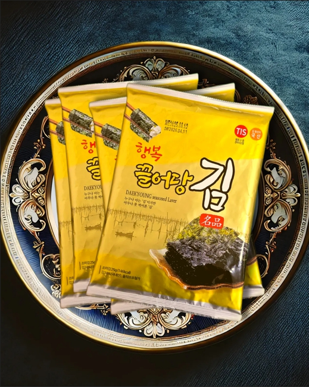

행복끌어당김 공식 상품

PREMIUM SEASONED LAVER
전장 조미김
큼직한 전장 그대로,
식탁에서 넉넉하게 즐기는 조미김
- 상품 구성
- 10봉지 · 1박스
- 판매 가격
- 30,000원
주문 페이지에서 수량과 배송비를 확인할 수 있습니다.
대경물산 공식몰
좋은 원초로 만든 프리미엄 곱창김

PREMIUM SEASONED LAVER
큼직한 전장 그대로,
식탁에서 넉넉하게 즐기는 조미김
주문 페이지에서 수량과 배송비를 확인할 수 있습니다.
행복을 식탁으로
밥과 함께 곁들이거나 먹기 좋은 크기로 잘라 온 가족이 함께 즐겨보세요. 넉넉한 전장 형태로 취향에 맞게 활용할 수 있습니다.
직사광선과 습기를 피해 서늘한 곳에 보관해 주세요. 개봉 후에는 밀봉해 보관하는 것이 좋습니다.
1~2박스 4,000원 · 3~4박스 6,000원
5박스 이상 무료배송